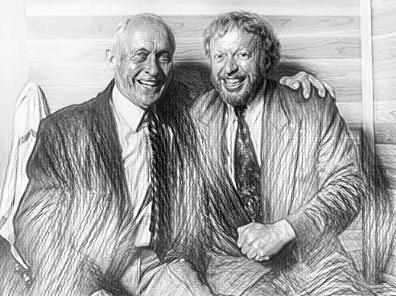
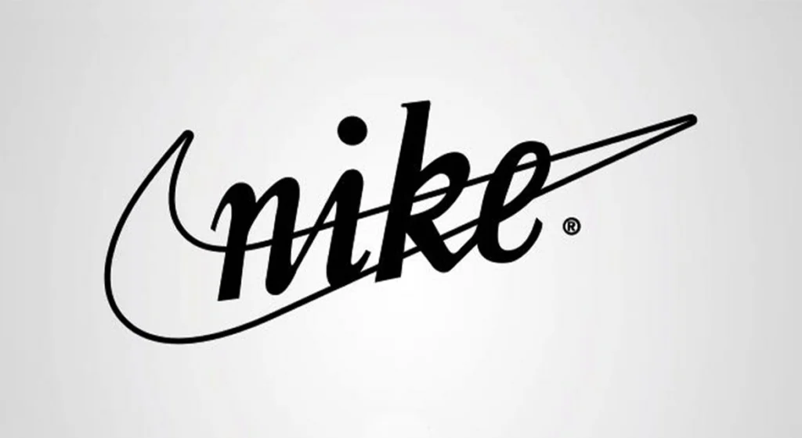
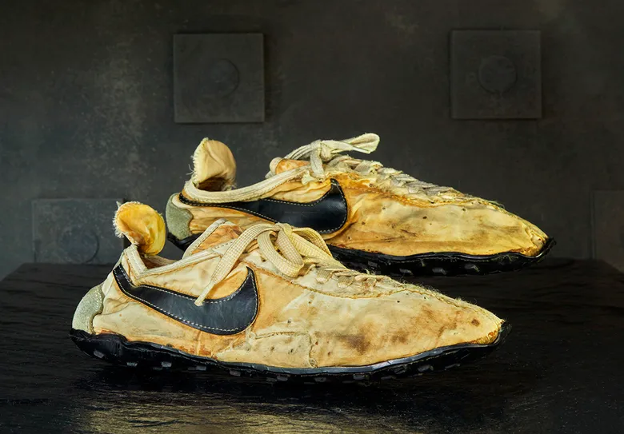
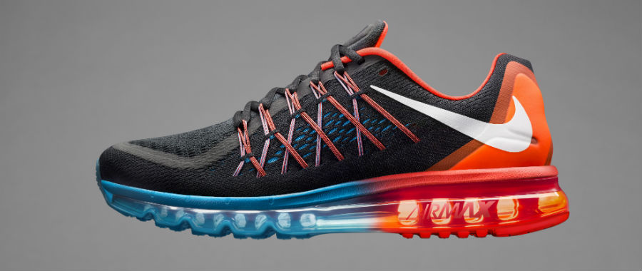
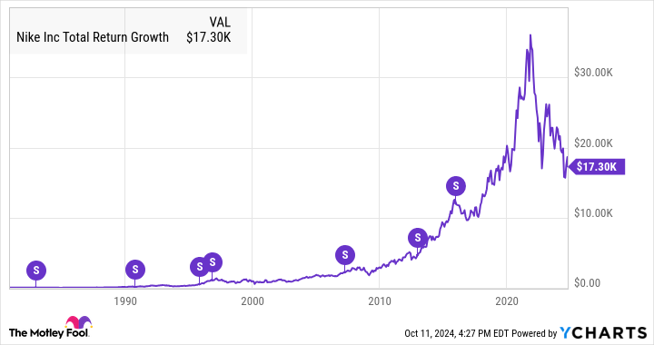
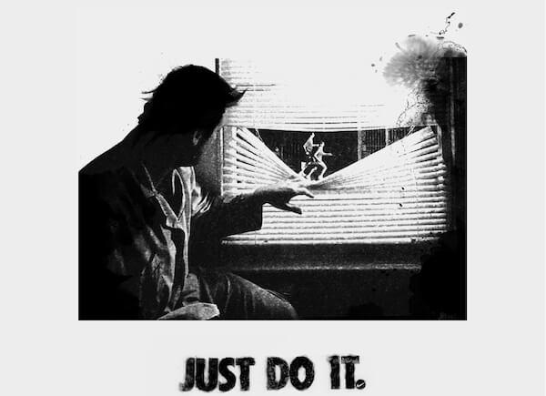
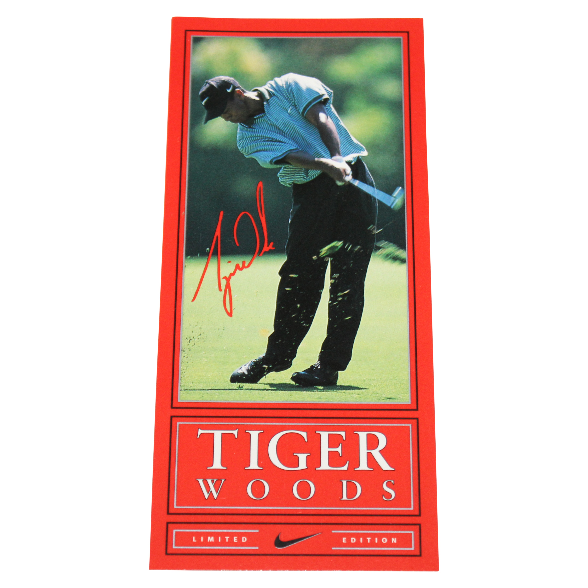
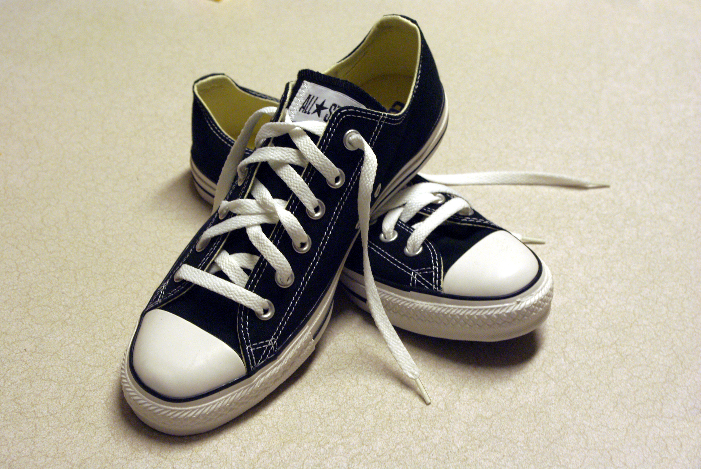
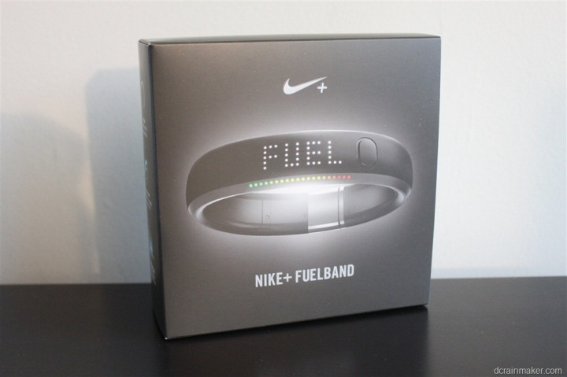

1964
Oprichting van Blue Ribbon Sports

Phil Knight en Bill Bowerman starten een bedrijf dat aanvankelijk sportschoenen importeert uit Japan. Dit vormt de basis van Nike.
1971
Naamsverandering naar Nike

Het bedrijf kiest de naam Nike, naar de Nike, en introduceert het herkenbare Swoosh-logo dat snelheid en beweging symboliseert.
1972
Eerste eigen schoenen

Nike brengt voor het eerst zelf ontworpen schoenen uit, wat hen onafhankelijk maakt van andere merken en hun groei versnelt.
1979
Introductie van Air-technologie

Nike ontwikkelt een luchtkussen in de zool, waardoor schoenen comfortabeler en schokabsorberend worden—een belangrijke innovatie.
1980
Beursgang

Door naar de beurs te gaan haalt Nike veel kapitaal op, wat helpt om internationaal uit te breiden.
1984
Samenwerking met Michael Jordan

De deal met Michael Jordan leidt tot de Air Jordan, een van de succesvolste sneakerlijnen ooit.
1988
“Just Do It”-campagne

Deze slogan maakt Nike wereldwijd herkenbaar en versterkt hun imago als motiverend en inspirerend sportmerk.
1996
Contract met Tiger Woods

Deze slogan maakt Nike wereldwijd herkenbaar en versterkt hun imago als motiverend en inspirerend sportmerk.
2006
Overname van Converse

Met de aankoop van Converse breidt Nike zijn invloed uit in casual en lifestyle schoenen.
2012
Lancering Nike+ FuelBand

Nike zet een stap richting technologie en fitness-tracking met een draagbaar apparaat dat beweging en activiteit meet.